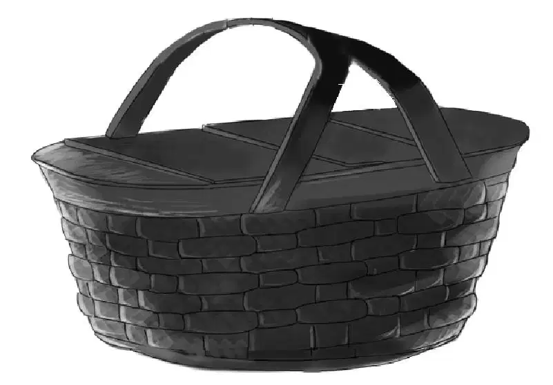
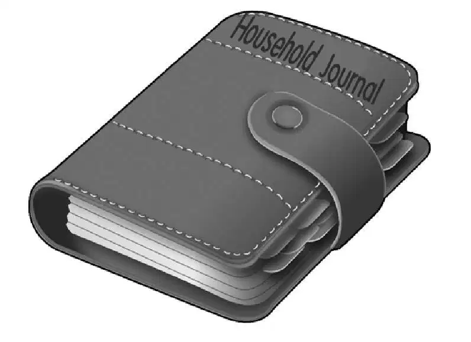

Uncle Max was glad to see his brother’s family coming to visit. Benny had come along, too.
“You see I have started to cut a long window,” Max said, pointing at the front wall of the restaurant. “This place is already a lot lighter.”
“The boys have a question they want to ask you, Max,” said Mrs. Beach.
“I hope I can answer it,” he said.
Sammy told about the newspaper stories about Willy Carver, Mrs. Carver, and the Johnsons. Before he had finished, Uncle Max began to nod his head.
“Yes,” he said, “our father bought the house from Joseph Carver, but I remember it had to be all cleaned up because so many children had lived there. Don’t you recall, John? No, I guess you were too little to notice.”
“I guess I was,” Mr. Beach said.
“Then there was something else,” Uncle Max said and frowned. “I can’t think. It was a visitor. I was only a kid myself.”
“Oh, think hard,” begged Sammy. “Was the visitor a man or a woman? ”
“It was a man,”answered Uncle Max.“A youngman. He came to see our father. He spoke in a way that seemed funny to me. You know, he said ‘rawther’for ‘rather’.”
“That sounds English,” Mrs. Beach said.
“Well,” Uncle Max went on, “my dad and the young man went upstairs and all over the house. They were looking for something, but I don’t know what it was. I am sure they did not find anything because the young man was disappointed when he left.”

“Did they go up to the third floor? ” Benny asked.
“Yes, I remember climbing the stairs behind them.”
Jeffrey looked ready to burst with an idea. He said, “I can guess who that was. It must have been Willy Carver. He would have been grown-up then and maybe he wanted to find his old room.”
Benny said, “I think you’re right, Jeff. I’m sure he never forgot that big rocking horse.”
Sammy said, “He’d never guess part of his old room had been closed off and the door covered with wallpaper.He must have thought the toys and rocking horse were lost or taken away by someone else.”
“It does all fit in,” said Uncle Max. “Quite a mystery. If his grandmother closed that room off, she never told him about it.”
“And now let’s talk about your restaurant,” said John Beach.
Max shook his head. “I haven’t thought of a good name for it yet.”
Sammy could not wait. “I have! It’s the most stupendous name—the Rocking Horse!”
Uncle Max burst out laughing.“It is a stupendous name, Sammy. How did you ever think of it? ”
“Well,you know that rocking horse that belonged to Willy? We could bring it down and put it beside the door and then put all the other old toys on shelves around the room for children to look at.”

Mrs. Beach said, “I think everyone would like to see those toys. They are so old and interesting.”
“We must have a sign outside! ”cried Uncle Max. “I can make it myself just exactly like the old rocking horse. I’ll have to see it first.”
“Right,” said his brother. “I know you like to draw. Come and have dinner with us tomorrow and see the toys.”
Uncle Max winked at Sammy. “I’d like to eat in the tree house,” he said.
“Let’s make it a backyard dinner,” Mr. Beach said.
“And invite the Aldens,” Jeffrey said.
“That would make ten,”said Sammy instantly.
“I’ll come and bring two apple pies,” agreed Uncle Max.
“Oh, good!” said Benny. “You make the best apple pie I ever ate—except that one Jessie made using a glass bottle for a rolling pin.”
When the Aldens came over to the backyard of the Beach house the next evening they were surprised. Mr. Beach had brought out a charcoal stove.
“I didn’t know you could cook, Dad!”said Jeffrey.
“I think I can cook hamburger,” his father said.
A few minutes later Uncle Max came into the yard. He was carrying two apple pies and a small package wrapped in brown paper. Henry took one pie and Jessie took the other, but Uncle Max kept the package.He said hello to everyone,then he looked up at the tree house. He walked all around it.
“That’s a good tree house, boys,” he said. “It is better than ours.And where is that round window?”
“You can’t see it from the ground,”said Jeffrey.“Climb up into the tree and we’ll show you. You are going to eat dinner up here with us, you know.”
The two boys had climbed the rope ladder, but Uncle Max went up the ladder. Henry had made a wooden cover for the knothole. Jeffrey opcned it and took out the telescope and gave it to his uncle. “See,” he said, “look under the roof. Right over there.”

“There it is!” said Uncle Max. “You’re right!”
When dinner was ready, Sammy and Jeffrey let down the basket and Jessie put in paper plates with hamburgers, and pickles. There was milk for the boys and coffee for Uncle Max. Later there was pie and cheese.

After dinner it was time to show Uncle Max the attic. Jeffrey and Sammy started off with him when Mr. Alden surprised them by getting up. “I’d like to go, too,” he said.
The boys showed Uncle Max the wallpaper, the round window, and all the toys. They showed him the rocking horse.
Uncle Max took a tape measure out of his pocket.He measured the horse and rockers.He looked carefully at the colors.Then he drew a picture of the horse on a sketch pad he had brought.
“I see how well you draw,” Mr. Alden said. “That will be a fine sign. I’d like to help the new restaurant in some way. Why don’t you buy what you need for the sign and send the bill to me?”
Uncle Max agreed because he knew that Mr. Alden was really interested in the restaurant.
When everyone was in the yard again and it was almost time to go Uncle Max said, “I’ve been thinking about the mystery of the closed room. I thought I did not have any clues, but perhaps I am wrong.”
Now Uncle Max took the package that he had brought. He took off the brown paper and held out a leather-covered book. There were words in gold letters on the cover.They said“Household Journal”.
Everyone waited for Uncle Max to explain.
“When we moved away from this house,” he said, “we packed our books into boxes. I did not have any reason to look at the books that belonged to me for a long time. When I did, I found that this book had been packed with mine. It never belonged to me, so it must have been a mistake.”
Uncle Max opened the book and everyone saw that about half of it was filled with handwritten notes. In fact, it looked like a diary with dates written in it.
“To tell the truth,” Uncle Max said, “I thought I might tear out these pages and use the rest of the book for sketching. But I never did, and I just kept the book. It wasn’t my father’s book, and I decided it must have been left in the house at one time and mixed in with our books.”
Sammy couldn’t wait any longer. “But what does it say?” he asked.
Uncle Max said, “I knew you’d ask. I have been reading it, and now I think that this belonged to Mrs. Carver, Willy’s grandmother. She wrote down people who came to visit, things she ordered for the house,and the vegetables in her own garden.”
The children didn’t see how that would help solve the mystery but they waited.
“Look here,” Uncle Max said. “Here is a page dated April 5,1910.It shows that Mrs.Carver boughtfive rolls of wallpaper. ‘For little W’s room,’ it says.”
Jessie said, “That’s the paper with the drums and toys used for the closet and Willy’s room! She was getting ready for his visit.”
Uncle Max turned the page. “For July 10 it says ‘W’s birthday. Ordered cake and favors for ten children.’”

“That’s right!” Sammy said. “We read about the party in the old newspaper at the library. It’s the one Mrs. McGregor remembers.”
“Now,” said Uncle Max, “see if you can read this last page for yourselves.”
The date was August 15, 1910. The writing was faded and hard to read. It was Jessie who puzzled it out. This is what she read: “House rented to Johnson family. Cannot bear to think of strange children playing with W’s toys. Finished papering closet before packing to leave. Hope to return next year.”
For a minute everyone was quiet. Then Benny said, “That makes our guess right. Mrs. Carver closed up the room herself.”
“She never told anyone,”Henry said.“She thought she was coming back. But we know that she didn’t.”
“And so the rocking horse has been hidden all this time!” said Jeffrey. “I’m glad we’re the ones who found it.”
Uncle Max said,“I am,too. And now the rockinghorse will have a new home and lots and lots of children will see it—I hope.”